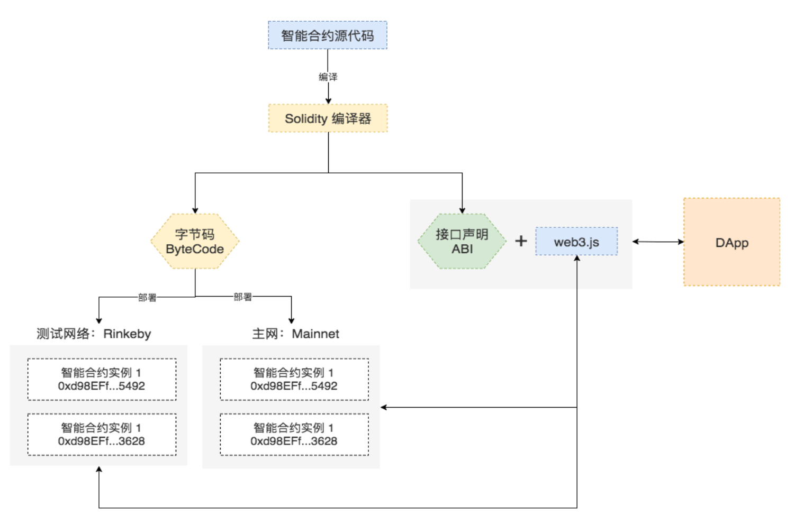
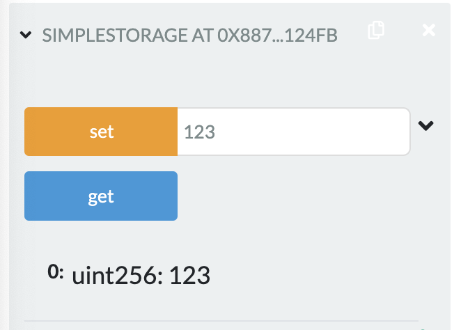

2022.2.20
Solidity语法，简单合约
Solidity 源代码要成为可以运行在以太坊上的智能合约需要经历如下的步骤:
Remix
solcjs
npm install -g solcsolcjs,如果要用命令solc可以自己去alias sloc=slocjs。
xxxxxxxxxxpragma solidity ^0.4.0; contract SimpleStorage { uint storedData; function set(uint x) public { storedData = x; } function get() public view returns (uint) { return storedData; } }
注意从solidity 0.5开始，字符串类型需要指定memory！
xxxxxxxxxxpragma solidity ^0.8.0; contract Car { struct CarInfo { string brand; uint price; } CarInfo carInfo; function setBrand(string memory newBrand) public{ carInfo.brand=newBrand; } function getBrand() public view returns(string memory) { return carInfo.brand; } function setPrice(uint newPrice) public{ carInfo.price=newPrice; } function getPrice() public view returns(uint) { return carInfo.price; } }另外可以在合约部署的时候传入参数，用到constructor方法
xxxxxxxxxxpragma solidity ^0.8.0; contract Car { bytes brand=new bytes(12); uint price; constructor(string memory newBrand,uint newPrice){ brand=bytes(newBrand); price=newPrice; } function setBrand(string memory newBrand) public{ brand=bytes(newBrand); } function getBrand() public view returns(string memory) { return string(brand); } function setPrice(uint newPrice) public{ price=newPrice; } function getPrice() public view returns(uint) { return price; } }xxxxxxxxxxpragma solidity >0.4.22 <0.6.0; contract Coin { address public minter; mapping (address => uint) public balances; event Sent(address from, address to, uint amount); constructor() public { minter = msg.sender; } function mint(address receiver, uint amount) public { require(msg.sender == minter); balances[receiver] += amount; } function send(address receiver, uint amount) public { require(amount <= balances[msg.sender]); balances[msg.sender] -= amount; balances[receiver] += amount; emit Sent(msg.sender, receiver, amount); }}event Sent(address from, address to, uint amount);
emit Sent(msg.sender, receiver, amount);
address public minter;
mapping(address => uint) public balances;
事件的监听
xxxxxxxxxxCoin.Sent().watch({}, '', function(error, result) { if (!error) {console.log("Coin transfer: " + result.args.amount + "coins were sent from " + result.args.from + " to " + result.args.to + ".");console.log("Balances now:\n" + "Sender: " +Coin.balances.call(result.args.from) +"Receiver: " + Coin.balances.call(result.args.to));下面是remix的案例程序
xxxxxxxxxx// SPDX-License-Identifier: GPL-3.0
pragma solidity >=0.7.0 <0.9.0;
/** * @title Ballot * @dev Implements voting process along with vote delegation */contract Ballot { struct Voter { uint weight; // weight is accumulated by delegation bool voted; // if true, that person already voted address delegate; // person delegated to uint vote; // index of the voted proposal }
struct Proposal { // If you can limit the length to a certain number of bytes, // always use one of bytes1 to bytes32 because they are much cheaper bytes32 name; // short name (up to 32 bytes) uint voteCount; // number of accumulated votes }
address public chairperson;
mapping(address => Voter) public voters;
Proposal[] public proposals;
/** * @dev Create a new ballot to choose one of 'proposalNames'. * @param proposalNames names of proposals */ constructor(bytes32[] memory proposalNames) { chairperson = msg.sender; voters[chairperson].weight = 1;
for (uint i = 0; i < proposalNames.length; i++) { // 'Proposal({...})' creates a temporary // Proposal object and 'proposals.push(...)' // appends it to the end of 'proposals'. proposals.push(Proposal({ name: proposalNames[i], voteCount: 0 })); } } /** * @dev Give 'voter' the right to vote on this ballot. May only be called by 'chairperson'. * @param voter address of voter */ function giveRightToVote(address voter) public { require( msg.sender == chairperson, "Only chairperson can give right to vote." ); require( !voters[voter].voted, "The voter already voted." ); require(voters[voter].weight == 0); voters[voter].weight = 1; }
/** * @dev Delegate your vote to the voter 'to'. * @param to address to which vote is delegated */ function delegate(address to) public { Voter storage sender = voters[msg.sender]; require(!sender.voted, "You already voted."); require(to != msg.sender, "Self-delegation is disallowed.");
while (voters[to].delegate != address(0)) { to = voters[to].delegate;
// We found a loop in the delegation, not allowed. require(to != msg.sender, "Found loop in delegation."); } sender.voted = true; sender.delegate = to; Voter storage delegate_ = voters[to]; if (delegate_.voted) { // If the delegate already voted, // directly add to the number of votes proposals[delegate_.vote].voteCount += sender.weight; } else { // If the delegate did not vote yet, // add to her weight. delegate_.weight += sender.weight; } }
/** * @dev Give your vote (including votes delegated to you) to proposal 'proposals[proposal].name'. * @param proposal index of proposal in the proposals array */ function vote(uint proposal) public { Voter storage sender = voters[msg.sender]; require(sender.weight != 0, "Has no right to vote"); require(!sender.voted, "Already voted."); sender.voted = true; sender.vote = proposal;
// If 'proposal' is out of the range of the array, // this will throw automatically and revert all // changes. proposals[proposal].voteCount += sender.weight; }
/** * @dev Computes the winning proposal taking all previous votes into account. * @return winningProposal_ index of winning proposal in the proposals array */ function winningProposal() public view returns (uint winningProposal_) { uint winningVoteCount = 0; for (uint p = 0; p < proposals.length; p++) { if (proposals[p].voteCount > winningVoteCount) { winningVoteCount = proposals[p].voteCount; winningProposal_ = p; } } }
/** * @dev Calls winningProposal() function to get the index of the winner contained in the proposals array and then * @return winnerName_ the name of the winner */ function winnerName() public view returns (bytes32 winnerName_) { winnerName_ = proposals[winningProposal()].name; }}